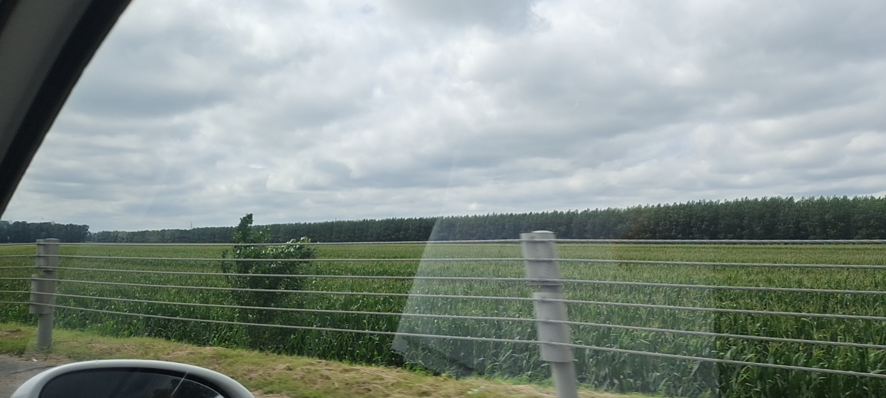
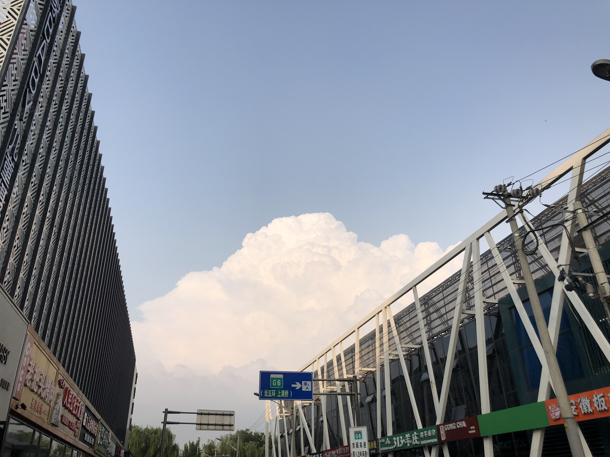
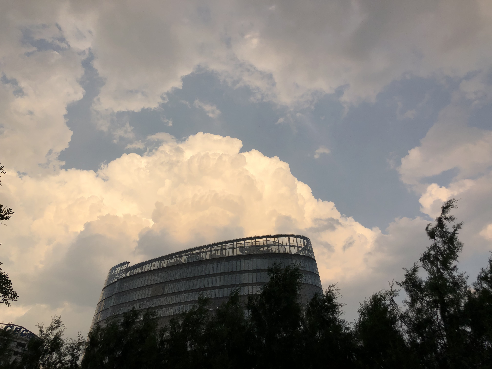
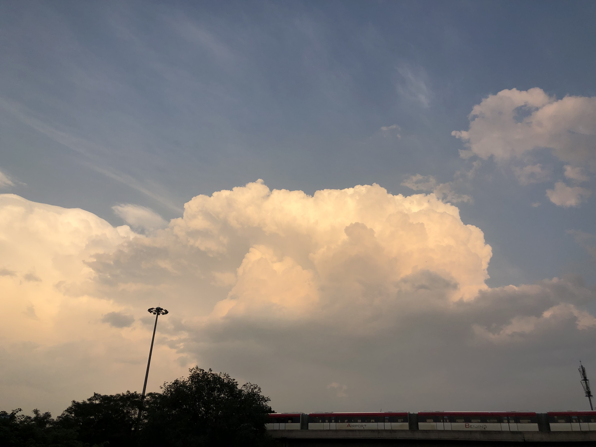

转自知乎
没有结果的爱情，实在正常不过。
痴情人求因果，情爱里无始终。
人间情事，大多都没有结果，余下一部分，只是以为会有结果，唯有极少的人，侥幸成功，偏偏侥幸成功的，又被奉为圭臬，就好像买彩票中了头奖，吸引人的手段，迷惑人的说辞，却把中头奖当作是常态，实则也不过是庸人自扰。
毕竟感情这东西，天生的不公平，我只见有缘人不劳而获，不见痴情者勤能补拙，都说喜欢的信手拈来，不爱的痴痴苦等，全因天之道损不足，而奉有余，索要的不给你，拿到的不想要，对等的付出，公平的结果，感情里没有。
可没有结果，是不是一件坏事？
我常想，也许无始无终，无因无果，才是爱情的本来面目，它既不可爱，也不可恶，并不值得我们去沉思有无，求索始终。
也许人这一生的情事，原本就该是憾事。
既然是憾事，你我又何必计较那些回报付出，进退维谷，妄想着天长地久，终成眷属，觉得若不能如此，爱情不得继续，人生没有意义，当我们这样想的时候，我们驻足不前，站在门外，想着她睡了吗，醒了吗，做梦了吗，可想了一夜，天亮了，她早就走了。
所以男男女女，爱恨情仇，岂是你想的明白，悟的出来，我见过太多的人这一秒说坐化菩提，下一秒就一见倾心，今夜说海誓山盟，明朝就一生不娶，你今天说没有结果，没准明天有了结果你又不满意，等你满意了她父母又不同意，父母同意了，房子又买不起，房子买得起了你又说这一开始就不是你想要的东西。
感情里那么多变数，那么多问题，你怎么一件件解决？
人活一世，短短数十载，又能爱上几个人？
见一个少一个，走一个丢一个。
多少人留不住，多少人让她走，每一个都要想，每一个都要问，到最后这也不行，那也不对，一抬头，花园走到了尽头，错过的都不再有。
感情的事，莫谈付出，别问结果。
天上的野火汹汹，地上的河流匆匆。
几人证得大果？
根本就没有结果。
可就算没有结果又怎样，没有结果你也喜欢她，你想要一个人，想要的不得了，想要到一切都是她，有没有结果，何必去在乎？
人们欣赏晚霞，并不是想要太阳本身，想要的只是太阳的光辉，可光辉何其飘渺，稍纵即逝，然而稍纵即逝，并不是没有意义，那些烈火红云狮子烈马，我来我见过，我眺望过思考过沉醉过，区区一轮太阳，不要也罢。
于我看来，爱情是我来过，我得到过，也失去过，是尝试，勇敢，努力，暧昧，魂牵梦绕，夜不能寐，也是多年以后的痛哭流涕，夜深人静的放歌饮醉。
爱情是当下，不是结果。
春雷夏雨来则来，去则去，从不问人间。
情愁爱恨有则有，无则无，何必添烦恼。
如果你今夜就要成大事，你就去成大事，你想决生死，那你就快去决生死，可你如果今天只是喜欢一个人，那就什么都不要管，什么都不要等，喜欢一个人的时机很短，短到只有一瞬，求哪门子善始善终，要狗屁的功德圆满，在一起就抓住，抓不住就恭送。
圆满是锦上添花，是星云皓月，大地惊雷，雨夜故人来。
要是故人不来，也要赏景，赏雪，赏秋风，赏刀剑，赏兵马，赏红烛，赏珍珠。
说不尽的伤春悲秋，笑不完的戚戚苦乐，都是自我的追逐，自我的享受，给不给结果，微不足道，蝼蚁之情，没有也罢，没有最好。
你说那圆满的令人羡慕，我却说失败的也是快活。
最后，我不想回答你要不要继续。
我只想告诉你，不要问因果，也不要求始终。
问恩爱，恩爱要齁。
求相思，相思要苦。
喜欢一个人，深陷其中，定好过隔岸观火。
完



